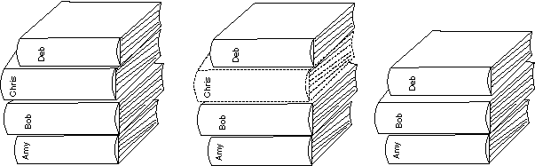

Ein Element entfernen
Manchmal möchten Sie ein Element aus einer Liste löschen.
Die Vector-Klasse hat dafür eine Methode, die das tut, ohne dass dabei an der Stelle des gelöschten Elements eine Lücke entsteht:
removeElementAt(int index) // Löscht das Element an der Stelle index.
// Jedes Element mit einem Index größer als index
// wird mit einem Index, der um eins kleiner ist als der
// vorherige Wert, nach unten verschoben.
Das Element an der Stelle index wird entfernt.
Elemente an den Stellen index+1, index+2, ... , size()-1 werden jeweils um eins nach unten verschoben, um die Lücke zu füllen.
Das ist wie das Herausziehen eines Buches aus der Mitte eines Bücherstapels.

FRAGE 11:

Prüfen Sie das folgende Programm. Was wird es ausgeben?
import java.util.* ;
class VectorBsp
{
public static void main ( String[] args)
{
Vector namen = new Vector( 10 );
namen.addElement( "Amy" );
namen.addElement( "Bob" );
namen.addElement( "Chris" );
namen.addElement( "Deb" );
namen.removeElementAt(2);
for ( int j=0; j < namen.size(); j++ )
System.out.println( j + ": " +
namen.elementAt(j) );
}
}